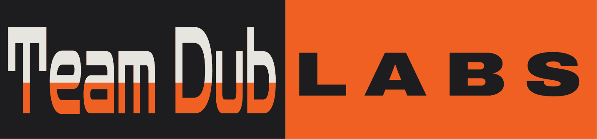

Ten new prototypes synthesised from the round-1 review: Ledger's off-white ground (02), Outcome-led's flow (04), Systems Diagram's animated graphic and footer (06) and Poster's big, modern type (07) — plus two details called out elsewhere: Terminal Refined's top gradient and Grid Index's grid outline. Same copy everywhere; the choice is structure and tone.
New logo assets are in — with a new usage rule. The banner (horizontal) lockup is dark-background only, so it appears where headers are dark (direction 19 and this gallery); light-ground pages pair the square TD mark with the wordmark instead. All three new files have transparent backgrounds.
Direction 20 is the control: Ledger structure at Poster scale with no diagram or gradient — it shows whether the graphic is earning its place in the other nine.
Safety Orange #FF5F15 · Space Black #1D1D1F · Modern Off-White #FAF9F6.
Zen Dots for display (never more than four words), Archivo for section headers, nav and buttons, Inter for body.
Round 2 — pick from these
The literal combination: off-white ground, soft top glow, poster hero, light-recoloured diagram, dark problem band, three engagements, orange poster contact. The baseline the other nine argue with.
Ledger's letterhead bones — orange bar, heavy black rules, ruled service table — with Poster's type scale dropped on top. Diagram inline as "how it fits."
Poster's full-bleed alternating panels, rebased so off-white is home ground. Dark appears once, carrying the animated diagram. Maximum type, orange finale.
Direction 13 with the diagram redrawn as a technical drawing — drafting grid, schematic routing with junction dots, dimension line, drawing notes and a title block. "Built to spec", literally.
The animated diagram IS the hero — centred poster headline, full-width graphic on off-white, then a quiet ledger table. Most "systems shop" of the ten.
Terminal Refined's glow translated to light and turned up. Outcome-led flow; the diagram keeps its dark ground but contained in a card. "Stop losing weeks" hero.
06's type-left / diagram-right hero moved onto off-white. No dark band anywhere — the pain points become ruled ledger rows. Lightest overall page.
One continuous orange rule runs the length of the page; every section hangs off it with a numbered marker. Diagram as section 02. Most editorial structure.
Grid Index's visible column grid kept — but as a faint whisper on off-white behind airy, unboxed content at poster scale. The tagline stays front and centre.
The gradient and diagram keep their dark home — but only in the opening panel. Everything after the fold is off-white with ledger rules and an orange poster contact.
Pure Ledger structure at Poster scale: heavy rules, huge Archivo headings, no diagram, no gradient. The typographic control for the set. Control
Round 1 — reviewed 2026-07 (kept for reference)
Engineering-drawing aesthetic — dimension lines, annotated callouts.
Light-first on off-white. Liked in round 1 — especially the background.
Liked, less than Ledger; the top gradient carries into round 2.
Early favourite — the overall look and flow drive most round-2 layouts.
Content-forward narrative format.
Animation, diagram and footer carry forward; the dark background doesn't.
"Definite" — big, easy to read, modern. Its type scale is everywhere in round 2.
Fixed left rail. Read as old-school.
Stance-led. Read like a PDF.
Grid outline and tagline carry into round 2; the dense module site doesn't.